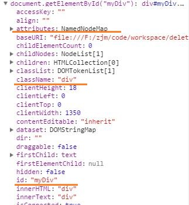
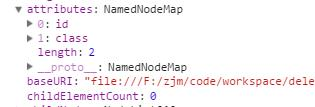
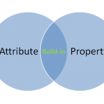
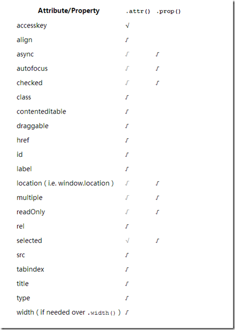

Javascript中的attribute和property的区别

问题的来源是在JQuery中的2个方法attr(),prop()，这2个方法的使用有什么区别呢？
区别attribute和property
attribute和property是非常容易混淆的概念，只有区别了attribute和property，才能正确区分attr(),prop()方法。
attribute翻译成中文术语为“特性”，property翻译成中文术语为“属性”。
看一个简单的例子：
<div id="myDiv" class="div">div</div>
这里的div元素有2个attribute，id和class，元素的attribute是可以通过看html直观的看到的（除非通过setAttribute等方式设置）。通过setAttribute，getAttribute,removeAttribute可以设置，取得，删除div元素的attribute。
那什么是div这个元素的property呢？
先看一下下面这个例子：
var dog={
color:yellow,
eat:meat
}
在dog这个对象中， color，eat都是property。
那对于上面这个例子，我们不妨看看浏览器开发者工具

可以看到，DOM对象中有accessKey,align等多个property。
在这里，我们关注划线3个property。
attributes属性：attributes属性是一个比较特殊的属性。DOM节点的每个特性,都由一个Attr节点表示，且保存在attributes属性中，所以我们看attributes属性，就可以知道该元素有哪些特性，如图：

我们看到DOM对象中还有id,className，也就是意味着大多数元素的attribute，都可以通过访问property得到，即：
document.getElementbyId("myDiv").getAttribute("id");
document.getElementbyId("myDiv").id;
document.getElementbyId("myDiv").getAttribute("class");
document.getElementbyId("myDiv").className;
这2组结果是类似的。
注意区别：
1）只有公认的（非自定义的）特性，才能以属性的形式添加到DOM对象中。
例如
<div id="myDiv" class="div" myAttribute="attr">div</div>
document.getElementbyId("myDiv").getAttribute("myAttribute"); //attr
document.getElementbyId("myDiv").myAttribute //underfined(IE除外，IE会为自定义的特性创建属性)
2)有几类特殊的attribute，虽然有对应的属性名，但返回内容不一样
style :用getAttribute进行访问时，返回css文本，但用属性访问时，返回一个对象；
<div id="myDiv" class="div" style="color: yellow;background-color: red">div</div>
document.getElementById("myDiv").getAttribute("style");//"color: yellow;background-color: red"
document.getElementById("myDiv").style
//CSSStyleDeclaration {0: "color", 1: "background-color", alignContent: "", alignItems: "", alignSelf: "", alignmentBaseline: "", all: ""…}
onclick这类事件处理程序 ：用getAttribute进行访问时，返回函数文本，但用属性访问时，返回一个函数；
checked :用getAttribute进行访问时,返回和html中一样“checked”，但用属性访问时，返回一个“true”
类似的还有别的只取单个值的特性。
小结：attribute是html元素的概念，property是DOM对象的概念。公认的attribute会在DOM对象中自动创建property,因此，公认的attribute都可以通过DOM的property访问。

JQuery中attr(),prop()
相信大家看完上述内容之后，对attribute和property的理解已经清晰了一些。
jQuery 1.6 版本之前，只有attr()方法，而jQuery 1.6 版本版本之后，attr() 方法对于未设置的 attributes （即标签中没写该 attributes）都会返回 undefined。对于检索和改变 DOM 的 properties，如表单元素的 checked、selected 或 disabled 状态，应使用prop() 方法。
为什么呢？
<input id="input"checked="checked" />
$("#input").attr("checked")；//"checked"
$("#input").prop("checked");//true
<input id="input" />
$("#input").attr("checked");//undefined
$("#input").prop("checked");//false
为了避免attr()的这个问题影响，于是对于checked、selected 或 disabled 等，普遍选用prop()处理。
具体如何选择，可以看看下面这张图：
